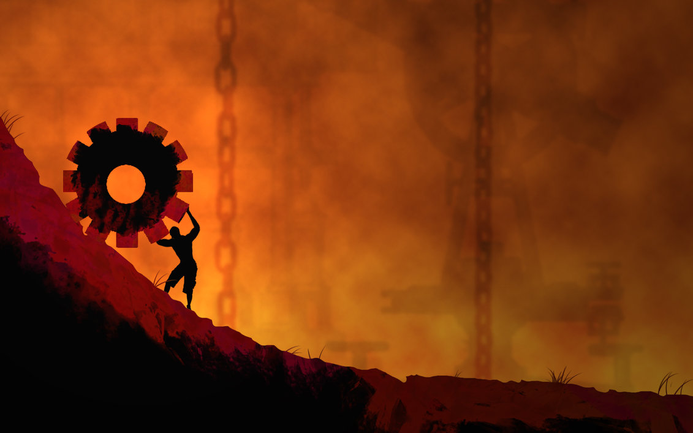

沉眠
因为他的无能，西西弗斯不得不沉入睡眠。
无论他如何努力，滚石都纹丝不动，似乎在嘲笑他的无能。然而他还是拼命推着，就这样仿佛僵持了几百年。将他诅咒，困于此地的众神似乎都感到无聊而散去了，而他们乘坐的云也不再遮蔽太阳。奥林匹斯山的太阳长久地照在西西弗斯身上，将他的皮肤烤成焦黑色，他的汗水在身上蒸发，留下闪亮的盐粒。尽管如此，他仍在卖力地试图推动滚石。
在时间长河中，他恍然大悟，对于他而言，继续努力下去似乎已毫无意义。这是他在几百年前就应当悟出的道理，而现如今忽然清明倒也似乎不晚。
于是西西弗斯沉入睡眠。
在梦中他看到了他曾经的王国。他的子民在他膝下卑躬屈膝，五体投地；他的妻子们对他唯唯诺诺，满脸谄媚；他的手只需一伸，一条河流便从海中流向首都；甚至死神都被他两度戏耍，被铁链束缚。
在梦中他想起了阿索波斯，追逐他女儿的河神。天空之主随意便绑架了他的家人，他只得诅咒自己的无能。他想起了邻国的王，与人民分享世界的真相，却因背叛众神被迫受永恒饥渴之罚。他想起了自己曾如何嘲笑那愚蠢的王，竟试图为了让人民幸福而献出生命得到永恒的惩罚；若是自己有幸与众神接耳交头，则绝不会将世界的真相告知任何人。
在梦中他看到了自己在某个噩梦般的山坡上推着滚石。
在梦中他看到了自己是个仁慈的王，是个完美无缺的王。他的人民无需顶礼膜拜，他的妻子无需战战兢兢。河流中的水为人民所用，而死神也无需将人民的性命夺取。然而待他死后，他似乎仍在山坡上推着滚石。
在梦中他看到了自己是邻国的王。在餐桌上与众神周旋时失误，于是一命呜呼。然而他死后仍在推着滚石。
滚石逐渐变大。逐渐地，他什么都看不到了。那块滚石似乎正在以无与伦比的速度冲来。
他在梦中看到了死亡。在死亡中，他依稀看到了新生。
然而他醒来了。他的皮肤仍是黑焦色，奥林匹斯山的太阳还与往常一样炙热。对于他而言，这一切不过是一场梦。他终究是个暴君，而他终究也在这山上推着滚石。自然，他是无能的。从古至今都没有一个人战胜众神的故事，就算有，那些人也不过是成神了罢。
而正因此，他不得不陷入沉眠。
-2022.11.30, Rothesay NB, Tony Su
Art Credit: 884 ink on Pinterest
Click Me For Document Download as .docx File